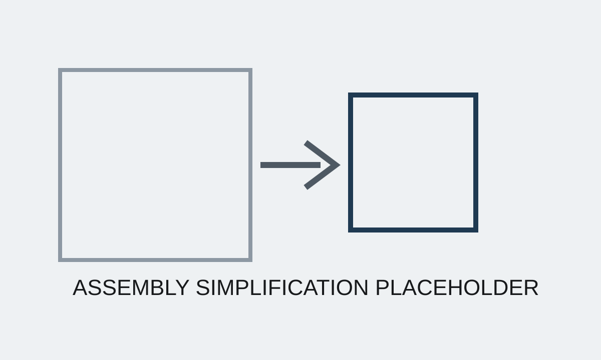

Additional Project
Tiller Steering Prototype Development
Developed and tested a prototype tiller steering system that brought together mechanical design, electrical integration, and software coordination.
Overview
The work centered on rapid design-build-test cycles to prove out steering functionality, package constraints, and subsystem integration. It also produced drawings and documentation that supported continued development.
What I Built
- Prototype steering-system hardware and integration concepts
- Mechanical-electrical-software coordination for functional testing
- GD&T drawings and development documentation
Images

